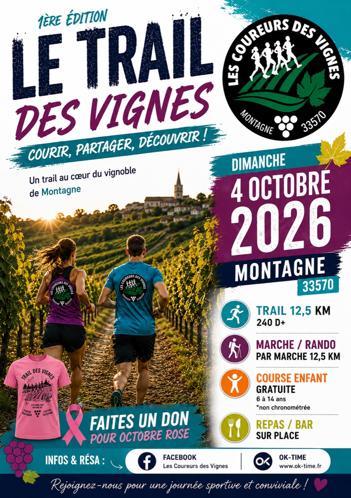
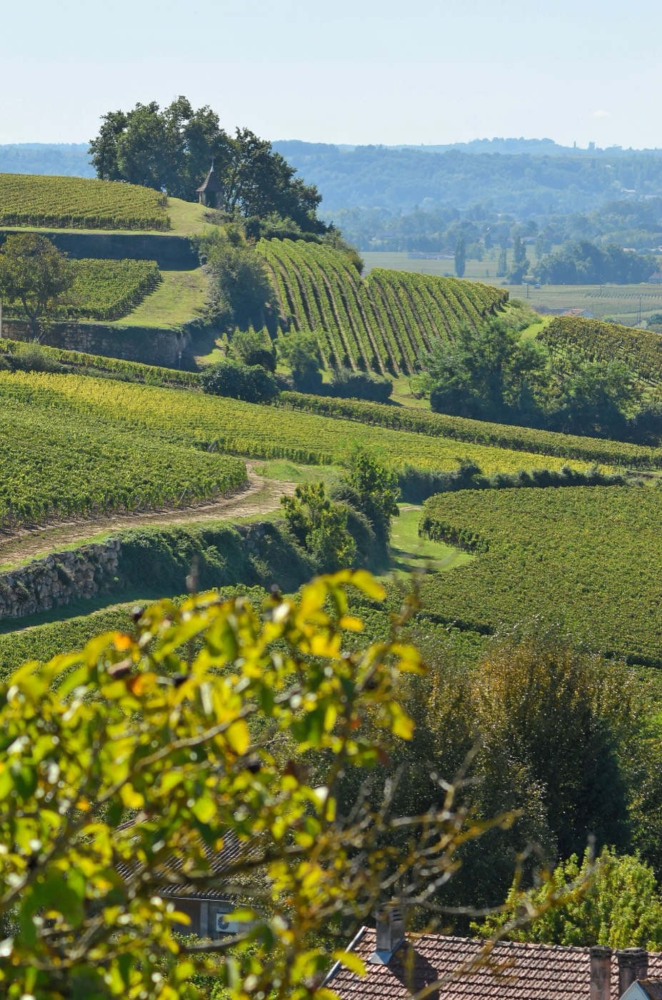
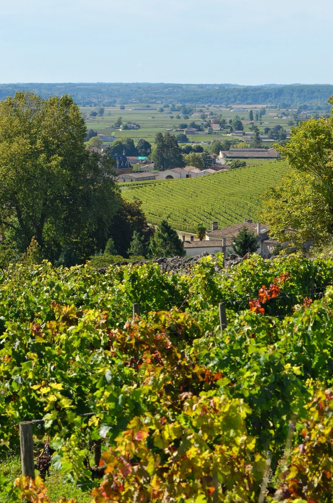

Courses officielles, trails dans le vignoble et sorties conviviales : le calendrier de la saison.
Notre grand rendez-vous de la saison : la première édition du Trail des Vignes.

trail-des-vignes.jpgassets/
Courir, partager, découvrir !
Un trail au cœur du vignoble de Montagne, ouvert aux coureurs comme aux marcheurs. Une journée sportive et conviviale à ne pas manquer.
Infos & réservations : Facebook « Les Coureurs des Vignes » · www.ok-time.fr
Quelques moments forts des saisons passées. Envie d'y figurer ? Rejoignez-nous.
 PHOTO · event-1.jpg
PHOTO · event-1.jpg
PHOTO · event-2.jpg
PHOTO · event-3.jpgPartenariat, course locale, animation sportive… Le club est toujours partant pour bouger. Écrivez-nous.